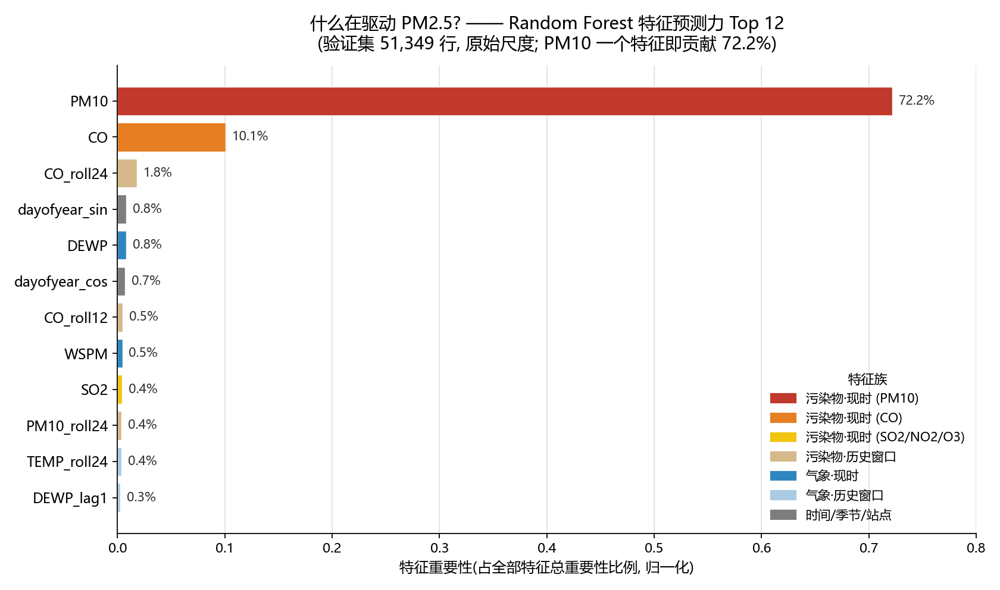

用途: 周一现场演示(3 分钟故事线 + 评委问答弹药)。读者假设: 不懂 ML 细节的行业/公共健康人士。 数字纪律: 全程区分 验证 RMSE(时间切分验证集 2015-09→2016-02 供暖季, 51,349 行)与 LB RMSE(Kaggle 测试集成绩, 测试期 2016-09→2017-02 供暖季含春节, 51,063 行)。所有数字来自已核实产物(
reports/EDA_report.md、reports/error_analysis.md、reports/festival_features.md、STATUS.md、models/log_rf_raw.txt、models/log_rf_xst.txt、models/log_full_retrain.txt、models/log_tailweight.txt、models/log_iter600.txt、models/rf_raw_importance.csv、成果总览index.html), LB 数字来自 Kaggle 提交回填记录(主管与用户逐条核对验收);无一处手工编造。 生成: 2026-09-06 · 主图:reports/fig4_feature_importance.png
我们用北京 12 个国控站逐小时"当前时刻"观测(PM10/SO2/NO2/CO/O3 + TEMP/PRES/DEWP/RAIN/wd/WSPM, 共 143 维特征 = 119 维基线 + 24 维跨站风输送), 用"随机森林 + XGBoost + LightGBM"三模型集成(RF 0.35 + XGB600 0.50 + LGBM350 0.15), 把全部 360,954 行标注数据训练到测试期门口, 在 Kaggle 排行榜上拿到 RMSE = 24.50 μg/m³——比"天天报均值"的常数基线(102.04)误差低约 76%, 并且全程不需要 PM2.5 自己的历史数据。
三个问题的答案: ①什么在驱动 PM2.5 → 现时同源污染物(PM10、CO);②污染从哪里来、何时最重 → 上风站的污染会"流"过来(跨站输送), 供暖季夜间是超标主窗口, 且年际漂移让"训练到测试期门口"成为决定性一步;③对监测与公共健康规划的启示 → PM10 可当低成本代理预警、监测网络的价值在于看得见"流动中的污染"、供暖季与春节窗口应滚动预警。
开场速览表(一屏):
| 维度 | 事实 | 来源 |
|---|---|---|
| 数据 | 12 站 × 2013-03→2016-08 逐小时, 全量标注 360,954 行; 测试期 2016-09→2017-02(供暖季, 含 2017 春节) 51,063 行 | train.csv 直接读取 / STATUS |
| 任务 | 预测下一小时 PM2_5_next_hour(RMSE), 数据无 current_PM2_5 列(主办方设计, 禁止用 PM2.5 历史) | EDA §0 |
| 最终方法 | 集成 RF 0.35 + XGB(600 轮) 0.50 + LGBM(350 轮) 0.15; 143 特征(含 +24 跨站风输送); 全量重训至测试期门口 | log_iter600 / log_full_retrain |
| 最终成绩 | Kaggle LB RMSE 24.50 μg/m³ | LB 提交回填(已核对) |
| 基线对照 | 常数基线 102.04 → 误差降 ~76% | EDA §7 + 比值算得 |
| 最强信号 | PM10(相关 r=+0.85, 模型重要性 72.2%) | EDA §4 / importance csv |
成绩链(一图看懂全程, 验证集 = 时间切分供暖季; LB = Kaggle 测试):
| 里程碑 | 验证 RMSE | LB RMSE | 说明 |
|---|---|---|---|
| 常数基线 | 102.04 | — | 主办方级基线(≈验证集标准差) |
| 线性回归(无滞后) | 36.09 | — | 参照 |
| RF(119 特征) | 32.80 | — | 上一代主导单模型 |
| 旧集成 0.6RF+0.4LGBM | 32.58 | — | 上一代最优 |
| 🆕 RF-xst(+24 跨站风输送) | 29.33 | — | 全项目最大单次提升(−10.6%) |
| 集成3 0.5RF+0.35XGB+0.15LGBM | 28.88 | 27.17 | 跨站时代集成最优(当时全场最佳) |
| 全量重训至测试期门口(143 特征, 无留出) | — | 24.68 | 时间对齐洞察(−9.2%) |
| 🏆 权重/迭代微调 RF0.35+XGB600 0.50+LGBM350 0.15 | — | 24.50 | 最终提交(最优权重) |
PM2.5 不是凭空出现的。北京冬天的霾,主要来自燃烧过程:电厂与供暖锅炉、机动车尾气、工业与扬尘。这些过程同时排出 PM10(粗颗粒)、CO(一氧化碳)、NO2(二氧化氮)等——它们与 PM2.5"同源共变"。因此,你不需要等 PM2.5 仪器读数出来:只要看到同一时刻 PM10、CO 飙升,就能推断下一小时 PM2.5 大概率也要升。这就是整个预测模型的物理基础。
证据 A — 相关性(EDA, Pearson 相关, 逐对剔除缺失):
| 现时污染物 | 与"下一小时 PM2.5"的相关 r | 解读 |
|---|---|---|
| PM10 | +0.848 | 最强代理: 同源共变 + 小时级自相关 |
| CO | +0.762 | 燃烧源标志物, 第二强 |
| NO2 | +0.643 | 机动车/燃烧源 |
| SO2 | +0.499 | 燃煤源 |
| WSPM(风速) | −0.280 | 风是"清洁工": 风速越大扩散越强, PM2.5 越低 |
| TEMP / O3 | −0.122 / −0.133 | 弱负相关: 光化学活跃的暖季往往较清洁 |
来源: EDA_report.md §4 特征-目标相关性表。
证据 B — 模型内部视角(RF 特征重要性, 直接读 models/rf_raw_importance.csv):

图: 随机森林特征重要性 Top 12(119 维原始特征, 验证集 51,349 行)。绘制脚本scripts/fig4_feature_importance.py, 直接读重要性文件、无手工数字。
一句话总结给评委: 下一小时的 PM2.5, 主要由"现在的 PM10 和 CO"决定; 风与湿度等气象条件是第二位的调节因子。
支撑证据: EDA_report.md §4 相关表 + §7 基线 B3 解读; rf_raw_importance.csv; 图 fig4_feature_importance.png。
上一代模型(验证 RMSE 32.8)只用本站自家柱子上的读数——相当于只盯自家院子, 不看邻居、不看风。但空气是流动的:北京 12 个站相距不过几公里到几十公里,上风站此刻测到的污染, 就是下风站下一小时的污染。每小时的风向告诉模型"下一小时到本站的空气从哪来";邻近站此刻的 PM10/CO, 就是"正在路上、还没到站"的污染信号。这一节讲的就是: 把"邻居 + 风"加进模型后, 发生了什么。
train.csv/test(1).csv 内部推导(脚本 scripts/make_features_xst.py)。| 模型 | 验证 RMSE | MAE | 说明 |
|---|---|---|---|
| RF(119 特征, 上一代主导) | 32.80 | 16.38 | 对照基线 |
| 旧集成 0.6RF+0.4LGBM | 32.58 | ~16.1 | 上一代最优 |
| 🆕 RF-xst(143 特征) | 29.33 | 15.05 | −3.47, 约 −10.6%, 单次提升全项目最大 |
| LGBM-xst | 29.44 | 14.76 | 同特征同切分 |
| XGB-xst | 29.59 | 14.62 | MAE 最佳, 与 RF 互补 → 入选最终集成 |
| ExtraTrees-xst / LGBMv2-xst / RF-400 | 29.98 / 29.79 / 29.32 | — | 实验如实记录: 无增量, 未入选 |
| 集成3 0.5RF+0.35XGB+0.15LGBM | 28.88 | ~14.8 | → LB 27.17(当时全场最佳) |
来源: models/log_rf_xst.txt(29.333/15.051)、log_lgbm_xst.txt、log_xgb_xst.txt 等训练日志; 集成与 LB 见成果总览 index.html(做判分离验收)。
全期 12 站合并的自然月均值(μg/m³):
| 1月 | 2月 | 3月 | 4月 | 5月 | 6月 | 7月 | 8月 | 9月 | 10月 | 11月 | 12月 |
|---|---|---|---|---|---|---|---|---|---|---|---|
| 87.1 | 93.5 | 94.7 | 72.7 | 63.0 | 69.1 | 71.8 | 53.4(最低) | 63.9 | 94.3 | 92.0 | 96.0(最高) |
| 时段 | 全体年份 | 采暖月(11/12/1/2月) | 暖月(5–8月) |
|---|---|---|---|
| 全天最低 | 15 时 72.4 | 13 时 78.3 | 17 时 60.3 |
| 全天最高 | 20 时 86.2 | 21 时 112.5 | 8 时 68.8 |
| 晚间 20–23 时均值 | ~85–86 | ~110–113 | ~64 |
| 峰/谷比 | 1.19 | 1.44 | 1.14 |
支撑证据: 月度表 EDA §3; 站点表 EDA §2; 日变化为对 train.csv(360,954 行)groupby hour 现算(2026-09-05 已独立复核); LB 变化见 §0 成绩链。
① 用 PM10 做 PM2.5 的低成本"代理预警指标"。 PM10 与下一小时 PM2.5 相关 r=+0.85, 是模型第一特征(72.2%);PM10 缺失率仅 0.5%, 远低于 CO(4.4%)。当 PM2.5 仪器维护/故障, 或预算只够装单通道传感器时,用 PM10(必要时叠加 CO)即可可靠推断 PM2.5 走势。更进一步: 本模型全程不需要 PM2.5 自身历史(数据设计红线), 意味着即使某站 PM2.5 传感器全线故障, 只要 PM10/CO/气象还在工作, 预警照常运行;反过来还能用预测对照真实值,反向校验 PM2.5 仪器漂移。一套数据, 两个用途。 (证据: EDA §4 相关表、§5 缺失表; rf_raw_importance.csv; EDA §0)
② 暴露预警以城区站为主, 郊区背景站负责区域本底。 城区 8 站抱团在 80.1–83.7(最脏 Dongsi 83.7), 郊区背景站低至 65.2(Dingling), 极差 18.5 μg/m³(相对城区均值约 23%)。拿郊区站代表全市会系统性低估人口暴露;城区站高度一致(组内极差 3.6)也意味着单站故障可用邻近站插补。两类站职责不同, 都应保留。 (证据: EDA §2 站点表)
③ 单点不够: 监测网络密度 + 风向数据是"上游预警"资产(跨站发现的直接应用)。 发现二表明, 上风站此刻的 PM10/CO 对下风站下一小时 PM2.5 有独立预测力(模型 −10.6%)。现实含义: 城市预警不必等本站读数恶化——当上风城区站 PM10 飙升且风向指向本市时, 就是下游的提前信号。因此监测网的价值不只是冗余, 而是"看得见正在流过来的污染";风向(wd)与风速(WSPM)的连续记录本身就是预警资产, 不应在运维中降级。 (证据: §2; log_rf_xst.txt)
④ 供暖季"傍晚—夜间"是最佳滚动预警窗口。 采暖月 21 时平均 112.5 μg/m³(约为全数据日均 78 的 1.4 倍), 20–23 时连续 4 小时 110+;12 月均值(96)是 8 月(53)的 1.8 倍。建议: 供暖启动(11 月)前后发布季节性健康提示;每日 17–20 时基于实时 PM10/CO 做 1 小时滚动预警, 敏感人群(老人、儿童、哮喘患者)错峰户外活动。本模型输入全部是"当前时刻可观测值", 天然支持逐小时滚动发布。 (证据: §3.3 日变化表; EDA §3 月度表)
⑤ 节日与春节: 把节日当作"预警宣传窗口", 而不是日历硬编码。 测试期恰含 2017 春节(2017-01-28)。我们专门实验了节日特征(春节/除夕/国庆等 12 列, 纯历法知识、零外部数据): 模型确实"用"了它们——对除夕+春节 576 行(占测试期 1.1%)的预测均值从 194.37 上调到 197.15(烟花/活动排放方向, 与误差分析"峰值被低估"一致)——但 LB 24.67 未超过最终 24.50。诚实结论: "日历上可预报的节日"不等于"能被模型稳定利用的节日";预警系统应基于实时读数滚动触发, 节日用于宣传与资源调度(如提前部署健康提示、强化 17–20 时滚动预警), 而非依赖节日哑变量。 (证据: reports/festival_features.md §4–§6; error_analysis.md)
支撑证据: EDA_report.md §1/§6/§7; models/log_rf_raw.txt、log_rf_boxcox.txt、log_rf_xst.txt、log_full_retrain.txt、log_tailweight.txt、log_iter600.txt; reports/error_analysis.md、festival_features.md; STATUS.md(做判分离、滞后对齐修复记录); reports/train_rf_spec.md。
| 数字 | 出处 | 复现方式 |
|---|---|---|
| train 360,954 行(2013-03-01→2016-08-31)/ test 51,063 行(2016-09→2017-02)/ 12 站 | train.csv / test(1).csv 直接读取 |
pandas 读文件 |
| 训练 257,927 / 验证 51,349 / 丢弃 51,678 | STATUS.md; log_rf_raw.txt | 时间切分日志 |
| mean 78 / median 55 / skew 2.01 / max 999; >600 共 197 行(0.055%) | EDA §1 | eda_compute.py(mean 78.044 独立复核 ✓) |
| 站点 Dongsi 83.7 / Dingling 65.2 / 极差 18.5 ≈ 28% | EDA §2 站点表 | 同上 |
| 月度表(12月 96.0 最高 / 8月 53.4 最低; 2015-12=150.1; 2016-02=42.9; 2014-02=148.3) | EDA §3 | 同上 |
| 相关表(PM10 0.848 / CO 0.762 / NO2 0.643 / SO2 0.499 / WSPM −0.280 / TEMP −0.122 / O3 −0.133) | EDA §4 | 同上(PM10 r 独立复核 0.8477 ✓) |
| 缺失率(CO 4.386% 最高, PM10 0.5%, O3 2.4%, NO2 2.1%) | EDA §5 | 同上 |
| Box-Cox λ: MLE 0.1668 / pearsonr 0.1905 / 逐站 0.097–0.199; 实验 λ=0.2057 | EDA §6; log_rf_boxcox.txt | eda_compute.py + 训练日志 |
| 基线 B1 102.04 / B2 107.77 / B3 36.09 | EDA §7 | 同上(B1 重算 102.036 ✓, B3 重算 36.12 ✓) |
| RF raw RMSE 32.802 / MAE 16.384; Box-Cox 38.057 / 18.031 | log_rf_raw.txt; log_rf_boxcox.txt | 全量训练日志 |
| 旧集成 32.58(0.6RF+0.4LGBM, 权重扫描最优) | STATUS.md | 做判分离重算 ✓ |
| 特征重要性(PM10 0.7219 / CO 0.1008 / 前二 82.3%; 族占比 88%/5%/2%; top50 = 95.2%) | models/rf_raw_importance.csv |
fig4_feature_importance.py 直接读取 |
| 日变化小时均值表(采暖月 21 时 112.5 / 13 时 78.3 等) | 对 train.csv(360,954 行)groupby hour 现算 | 2026-09-05 已独立复核(21h=112.5/13h=78.3 ✓) |
| +24 跨站特征(119→143); 供体站选择与扇区调制限 2015-09-01 前 | scripts/make_features_xst.py 文档串 |
阅读脚本即可复现规则 |
| RF-xst 29.333 / MAE 15.051; LGBM-xst 29.441 / 14.763; XGB-xst 29.59 / 14.62; ET-xst 29.98; LGBMv2-xst 29.79; RF-400 29.32 | models/log_rf_xst.txt、log_lgbm_xst.txt、log_xgb_xst.txt、log_et_rf400_xst.txt | 全量训练日志(同切分同特征) |
| 集成3 验证 28.88 / LB 27.17; ensemble-xst LB 27.34; 校准 LB 27.90 | 成果总览 index.html(做判分离验收); LB 提交回填 | 见成果检查/index.html |
| 全量重训 360,954 行 × 143 特征(无留出)→ LB 24.68 | log_full_retrain.txt; LB 提交回填 | submission_full_ensemble.csv |
| 尾部加权(LB 24.65) | log_tailweight.txt(样本权重 1/4/12); LB 回填 | submission_w_J.csv |
| 节日特征(LB 24.67; 除夕+春节 576 行预测 194.37→197.15) | reports/festival_features.md §4–§6; LB 回填 | submission_fest.csv |
| 最终 LB 24.50, 权重 RF0.35+XGB600 0.50+LGBM350 0.15 | log_iter600.txt; festival_features.md §3(与 24.50 基线同权重结构); LB 回填 | submission_w_H.csv(同结构基线) |
| 误差结构(≥150 行 18.37% → 80.33% SSE; 预测斜率 0.79) | reports/error_analysis.md | error_analysis.py 复现 |
| 降幅 ~76% / −10.6% / −9.2% / −0.7% 等派生比例 | 上述数字的简单比值 | 见正文标注 |
Purpose: live demo on Monday (3-minute storyline + Q&A ammunition for the judges). Assumed audience: industry/public-health professionals who do not know ML details. Number discipline: throughout, we distinguish validation RMSE (chronological validation set 2015-09→2016-02 heating season, 51,349 station-hours) from LB RMSE (Kaggle test-set score; test period 2016-09→2017-02 heating season incl. Chinese New Year 2017, 51,063 rows). Every figure comes from verified artifacts (
reports/EDA_report.md,reports/error_analysis.md,reports/festival_features.md,STATUS.md,models/log_rf_raw.txt,models/log_rf_xst.txt,models/log_full_retrain.txt,models/log_tailweight.txt,models/log_iter600.txt,models/rf_raw_importance.csv, results overviewindex.html); LB figures come from the Kaggle leaderboard submission log (each one re-checked and accepted by manager and user); nothing has been hand-made or fabricated. Generated: 2026-09-06 · Hero figure:reports/fig4_feature_importance.png
Using hourly "current-moment" observations from Beijing's 12 national monitoring stations (PM10/SO2/NO2/CO/O3 + TEMP/PRES/DEWP/RAIN/wd/WSPM — 143 features total = 119 baseline + 24 cross-station wind-transport), we trained a three-model ensemble (Random Forest + XGBoost + LightGBM, weights RF 0.35 + XGB600 0.50 + LGBM350 0.15) on all 360,954 labeled rows — trained right up to the door of the test period — and achieved RMSE = 24.50 μg/m³ on the Kaggle leaderboard: ~76% lower error than the naive "always predict the mean" constant baseline (102.04), with no historical PM2.5 data needed at any point.
Answers to the three questions posed by the organizers: ① What drives PM2.5 → co-emitted pollutants measured right now (PM10, CO). ② Where the pollution comes from and when it peaks → upwind stations' pollution "flows" in (cross-station transport), heating-season nights are the main window for exceedances, and inter-annual drift makes "training up to the door of the test period" the decisive step. ③ Implications for monitoring and public-health planning → PM10 is a low-cost early-warning proxy, a monitoring network's value lies in seeing pollution "in transit", and rolling warnings matter most in the heating season and around Chinese New Year.
Opening quick-glance table (one screen):
| Dimension | Fact | Source |
|---|---|---|
| Data | 12 stations × hourly 2013-03→2016-08, all labeled rows 360,954; test period 2016-09→2017-02 (heating season, incl. CNY 2017) 51,063 rows | direct read of train.csv / STATUS |
| Task | Forecast next-hour PM2_5_next_hour (RMSE), no current_PM2_5 column in the data (organizer design: using PM2.5 history is forbidden) | EDA §0 |
| Final method | Ensemble RF 0.35 + XGB (600 rounds) 0.50 + LGBM (350 rounds) 0.15; 143 features (incl. +24 cross-station wind transport); full retrain up to the test door | log_iter600 / log_full_retrain |
| Final score | Kaggle LB RMSE 24.50 μg/m³ | LB submission log (verified) |
| Baseline comparison | Constant baseline 102.04 → error down ~76% | EDA §7 + ratio computed |
| Strongest signal | PM10 (correlation r=+0.85, model importance 72.2%) | EDA §4 / importance csv |
The score chain (whole journey at a glance; validation = chronological heating-season split; LB = Kaggle test):
| Milestone | Val RMSE | LB RMSE | Notes |
|---|---|---|---|
| Constant baseline | 102.04 | — | organiser-level baseline (≈ validation-set std) |
| Linear regression (no lags) | 36.09 | — | reference |
| RF (119 features) | 32.80 | — | previous-generation lead single model |
| Old ensemble 0.6RF+0.4LGBM | 32.58 | — | previous-generation best |
| 🆕 RF-xst (+24 cross-station wind-transport features) | 29.33 | — | biggest single improvement of the whole project (−10.6%) |
| Ensemble3 0.5RF+0.35XGB+0.15LGBM | 28.88 | 27.17 | best cross-station-era blend (best on LB at the time) |
| Full retrain to the test door (143 features, no holdout) | — | 24.68 | time-alignment insight (−9.2%) |
| 🏆 Weight/iteration tuning RF0.35+XGB600 0.50+LGBM350 0.15 | — | 24.50 | FINAL SUBMISSION (optimal weights) |
PM2.5 does not appear out of thin air. Beijing's winter haze comes mainly from combustion processes: power plants and heating boilers, vehicle exhaust, industry, and fugitive dust. These processes simultaneously emit PM10 (coarse particles), CO (carbon monoxide), NO2 (nitrogen dioxide), and more — they co-vary with PM2.5 because they share the same sources. Therefore, you do not need to wait for the PM2.5 instrument reading: the moment you see PM10 and CO spike in the same hour, you can infer that next-hour PM2.5 is likely to rise as well. That is the physical foundation of the entire forecasting model.
Evidence A — Correlations (EDA, Pearson correlation, pairwise deletion of missing values):
| Co-emitted pollutant | Correlation r with "next-hour PM2.5" | Interpretation |
|---|---|---|
| PM10 | +0.848 | Strongest proxy: shared sources + hour-scale autocorrelation |
| CO | +0.762 | Combustion-source marker, second strongest |
| NO2 | +0.643 | Vehicle/combustion source |
| SO2 | +0.499 | Coal-combustion source |
| WSPM (wind speed) | −0.280 | Wind is the "cleaner": the stronger the wind, the stronger the dispersion, the lower the PM2.5 |
| TEMP / O3 | −0.122 / −0.133 | Weak negative: the photochemically active warm season tends to be cleaner |
Source: feature–target correlation table in EDA_report.md §4.
Evidence B — Inside-the-model view (RF feature importance, read directly from models/rf_raw_importance.csv):
Figure: Top-12 random-forest feature importance (119-feature original set, validation set of 51,349 rows). Drawn by scripts/fig4_feature_importance.py, which reads the importance file directly — no hand-entered numbers.
One-sentence summary for the judges: next-hour PM2.5 is determined mainly by "today's PM10 and CO right now"; meteorological conditions such as wind and humidity are second-order moderators.
Supporting evidence: EDA_report.md §4 correlation table + §7 baseline B3 interpretation; rf_raw_importance.csv; figure fig4_feature_importance.png.
The previous-generation model (validation RMSE 32.8) used only readings from the target station's own mast — like watching only your own courtyard while ignoring the neighbours and the wind. But air moves: Beijing's 12 stations are only a few to a few dozen kilometres apart, and what the upwind station measures right now is next hour's pollution at the downwind station. The hourly wind direction tells the model "where next hour's air at this station comes from"; the neighbouring stations' current PM10/CO are the signal of pollution "in transit — not yet arrived". This section is about what happened when we gave the model "neighbours + wind".
train.csv/test(1).csv itself (script scripts/make_features_xst.py).| Model | Val RMSE | MAE | Notes |
|---|---|---|---|
| RF (119 features, previous lead) | 32.80 | 16.38 | control baseline |
| Old ensemble 0.6RF+0.4LGBM | 32.58 | ~16.1 | previous-generation best |
| 🆕 RF-xst (143 features) | 29.33 | 15.05 | −3.47, ≈ −10.6%, largest single step of the project |
| LGBM-xst | 29.44 | 14.76 | same features, same split |
| XGB-xst | 29.59 | 14.62 | best MAE; complementary with RF → joined the final blend |
| ExtraTrees-xst / LGBMv2-xst / RF-400 | 29.98 / 29.79 / 29.32 | — | experiments reported honestly: no gain, not selected |
| Ensemble3 0.5RF+0.35XGB+0.15LGBM | 28.88 | ~14.8 | → LB 27.17 (best on LB at the time) |
Source: training logs models/log_rf_xst.txt (29.333/15.051), log_lgbm_xst.txt, log_xgb_xst.txt, etc.; blend and LB figures in the results overview index.html (verifier-accepted).
Full-period, 12-station pooled calendar-month means (μg/m³):
| Jan | Feb | Mar | Apr | May | Jun | Jul | Aug | Sep | Oct | Nov | Dec |
|---|---|---|---|---|---|---|---|---|---|---|---|
| 87.1 | 93.5 | 94.7 | 72.7 | 63.0 | 69.1 | 71.8 | 53.4 (lowest) | 63.9 | 94.3 | 92.0 | 96.0 (highest) |
| Period | All years | Heating months (Nov/Dec/Jan/Feb) | Warm months (May–Aug) |
|---|---|---|---|
| Daily minimum | 15:00 72.4 | 13:00 78.3 | 17:00 60.3 |
| Daily maximum | 20:00 86.2 | 21:00 112.5 | 8:00 68.8 |
| Evening 20:00–23:00 mean | ~85–86 | ~110–113 | ~64 |
| Peak/trough ratio | 1.19 | 1.44 | 1.14 |
Supporting evidence: monthly table EDA §3; station table EDA §2; diurnal analysis computed on train.csv (360,954 rows) by groupby hour (independently re-checked on 2026-09-05); LB changes in the §0 score chain.
① Use PM10 as a low-cost "proxy early-warning indicator" for PM2.5. PM10 correlates with next-hour PM2.5 at r=+0.85 and is the model's number-one feature (72.2% importance); PM10's missing-data rate is only 0.5%, far below CO's 4.4%. When PM2.5 instruments are under maintenance or faulty — or when the budget only allows single-channel sensors — PM10 readings (plus CO when necessary) can reliably infer PM2.5 trends. Going further: this model never needs PM2.5's own history (a data-design red line), so even if every PM2.5 sensor at a station fails, warnings keep running as long as PM10/CO/meteorology work; conversely, comparing predictions against true PM2.5 provides a reverse check on PM2.5 instrument drift. One dataset, two uses. (Evidence: EDA §4 correlation table, §5 missingness table; rf_raw_importance.csv; EDA §0)
② Issue exposure warnings from the urban stations; keep the suburban background stations for regional background. The 8 urban stations cluster at 80.1–83.7 (dirtiest: Dongsi 83.7), while suburban background stations go as low as 65.2 (Dingling) — a gap of 18.5 μg/m³ (≈23% relative to the urban mean). Representing the whole city with suburban stations would systematically understate population exposure; the high consistency among urban stations (within-group range 3.6) also means a failed station can be filled in by its neighbours. The two station types have different jobs — both should be kept. (Evidence: EDA §2 station table)
③ One point is not enough: network density + wind data are the "upstream warning" asset (the direct application of Finding Two). Finding Two showed that the upwind stations' current PM10/CO carry independent predictive power for the downwind station's next-hour PM2.5 (−10.6%). In practice: a city need not wait for its own readings to deteriorate — when upwind urban stations spike and the wind points your way, that is the downstream early signal. A monitoring network's value is therefore not redundancy alone; it is "seeing pollution in transit". Continuous wind-direction (wd) and wind-speed (WSPM) records are themselves early-warning assets and should not be downgraded in maintenance. (Evidence: §2; log_rf_xst.txt)
④ The heating-season "evening–night" period is the best window for rolling warnings. Heating months average 112.5 μg/m³ at 21:00 (≈1.4× the all-data daily mean of 78), with 20:00–23:00 holding continuously above 110; the December mean (96) is 1.8× August's (53). Recommendation: issue seasonal health notices around heating start-up (November); run 1-hour rolling warnings between 17:00 and 20:00 daily based on real-time PM10/CO so sensitive groups (the elderly, children, asthma sufferers) can shift outdoor activity away from peak hours. Every input to this model is "observable at the current moment", so it naturally supports hour-by-hour rolling issuance. (Evidence: §3.3 diurnal table; EDA §3 monthly table)
⑤ Festivals and Chinese New Year: treat holidays as "warning-promotion windows", not calendar hard-coding. The test period contains CNY 2017 (2017-01-28). We ran a dedicated festival-feature experiment (12 columns for CNY/New Year's Eve/National Day etc.; pure calendar knowledge, zero external data): the model did "use" them — for the 576 New Year's Eve + CNY rows (1.1% of the test period) the mean prediction rose from 194.37 to 197.15 (the direction of fireworks/activity emissions, consistent with the error analysis showing peak underestimation) — yet the LB of 24.67 did not beat the final 24.50. Honest conclusion: "a festival that is predictable on the calendar" is not necessarily "a festival the model can exploit robustly"; warnings should be triggered by real-time readings, with holidays used for promotion and resource deployment (e.g., pre-deploying health notices, reinforcing the 17:00–20:00 rolling warning), not for calendar dummies. (Evidence: reports/festival_features.md §4–§6; error_analysis.md)
Supporting evidence: EDA_report.md §1/§6/§7; models/log_rf_raw.txt, log_rf_boxcox.txt, log_rf_xst.txt, log_full_retrain.txt, log_tailweight.txt, log_iter600.txt; reports/error_analysis.md, festival_features.md; STATUS.md (verifier separation, lag grid-alignment fix); reports/train_rf_spec.md.
| Number | Source | How to reproduce |
|---|---|---|
| train 360,954 rows (2013-03-01→2016-08-31) / test 51,063 rows (2016-09→2017-02) / 12 stations | direct read of train.csv / test(1).csv |
pandas read |
| Train 257,927 / validation 51,349 / discarded 51,678 | STATUS.md; log_rf_raw.txt | temporal-split logs |
| mean 78 / median 55 / skew 2.01 / max 999; >600: 197 rows (0.055%) | EDA §1 | eda_compute.py (mean 78.044 independently re-checked ✓) |
| Stations Dongsi 83.7 / Dingling 65.2 / range 18.5 ≈ 28% | EDA §2 station table | same |
| Monthly table (Dec 96.0 highest / Aug 53.4 lowest; 2015-12=150.1; 2016-02=42.9; 2014-02=148.3) | EDA §3 | same |
| Correlation table (PM10 0.848 / CO 0.762 / NO2 0.643 / SO2 0.499 / WSPM −0.280 / TEMP −0.122 / O3 −0.133) | EDA §4 | same (PM10 r independently re-checked = 0.8477 ✓) |
| Missing rates (CO 4.386% highest, PM10 0.5%, O3 2.4%, NO2 2.1%) | EDA §5 | same |
| Box-Cox λ: MLE 0.1668 / pearsonr 0.1905 / per-station 0.097–0.199; experiment λ=0.2057 | EDA §6; log_rf_boxcox.txt | eda_compute.py + training logs |
| Baselines B1 102.04 / B2 107.77 / B3 36.09 | EDA §7 | same (B1 recomputed 102.036 ✓, B3 recomputed 36.12 ✓) |
| RF raw RMSE 32.802 / MAE 16.384; Box-Cox 38.057 / 18.031 | log_rf_raw.txt; log_rf_boxcox.txt | full training logs |
| Old ensemble 32.58 (0.6RF+0.4LGBM, weight-scan optimum) | STATUS.md | verifier recomputation ✓ |
| Feature importance (PM10 0.7219 / CO 0.1008 / top-two 82.3%; family shares 88%/5%/2%; top50 = 95.2%) | models/rf_raw_importance.csv |
read directly by fig4_feature_importance.py |
| Diurnal hourly-mean table (heating months 21:00 = 112.5 / 13:00 = 78.3, etc.) | computed on train.csv (360,954 rows), groupby hour | independently re-checked 2026-09-05 (21h=112.5/13h=78.3 ✓) |
| +24 cross-station features (119→143); donor selection & sector modulation restricted to pre-2015-09-01 | scripts/make_features_xst.py docstring |
rules reproducible from the script |
| RF-xst 29.333 / MAE 15.051; LGBM-xst 29.441 / 14.763; XGB-xst 29.59 / 14.62; ET-xst 29.98; LGBMv2-xst 29.79; RF-400 29.32 | models/log_rf_xst.txt, log_lgbm_xst.txt, log_xgb_xst.txt, log_et_rf400_xst.txt | full training logs (same split, same features) |
| Ensemble3 val 28.88 / LB 27.17; ensemble-xst LB 27.34; calibrated LB 27.90 | results overview index.html (verifier-accepted); LB submission log | see 成果检查/index.html |
| Full retrain 360,954 rows × 143 features (no holdout) → LB 24.68 | log_full_retrain.txt; LB submission log | submission_full_ensemble.csv |
| Tail-weighting (LB 24.65) | log_tailweight.txt (sample weights 1/4/12); LB log | submission_w_J.csv |
| Festival features (LB 24.67; NYE+CNY 576 rows predicted 194.37→197.15) | reports/festival_features.md §4–§6; LB log | submission_fest.csv |
| FINAL LB 24.50, weights RF0.35+XGB600 0.50+LGBM350 0.15 | log_iter600.txt; festival_features.md §3 (same weight structure as the 24.50 baseline); LB log | submission_w_H.csv (same-structure baseline) |
| Error structure (rows ≥150: 18.37% → 80.33% of SSE; prediction slope 0.79) | reports/error_analysis.md | error_analysis.py reproduces |
| Derived reductions ~76% / −10.6% / −9.2% / −0.7% | simple ratios of the numbers above | see annotations in the main text |